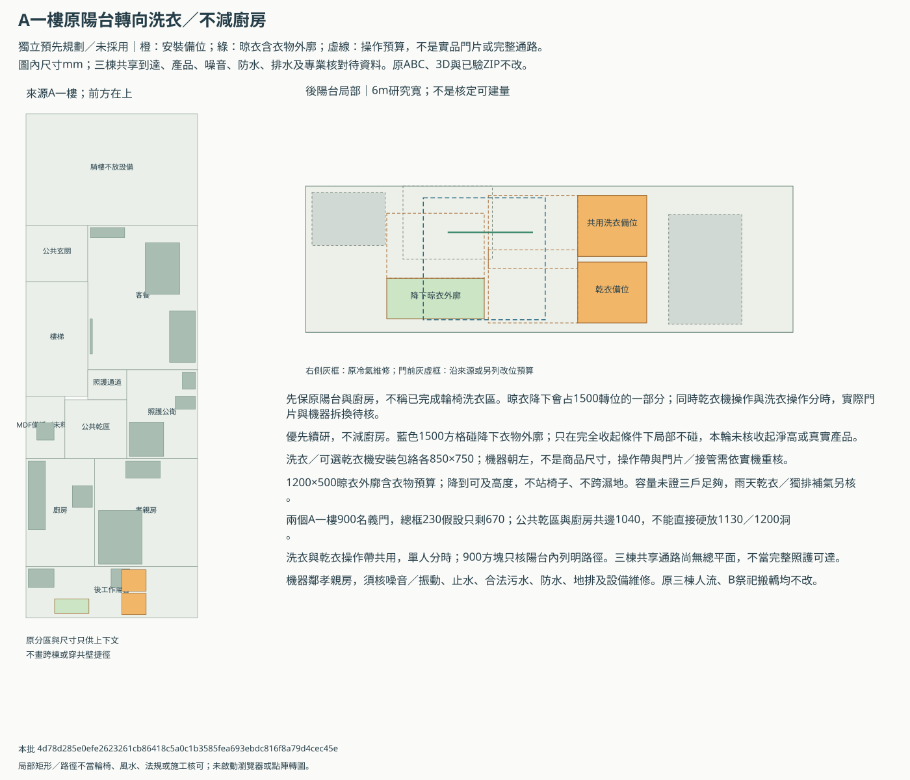
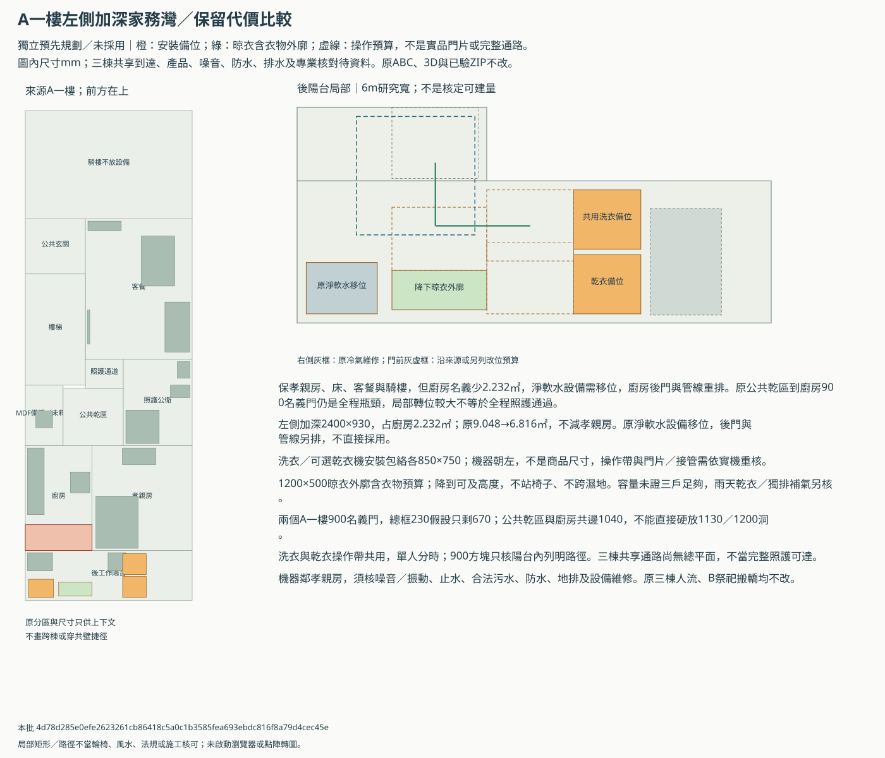
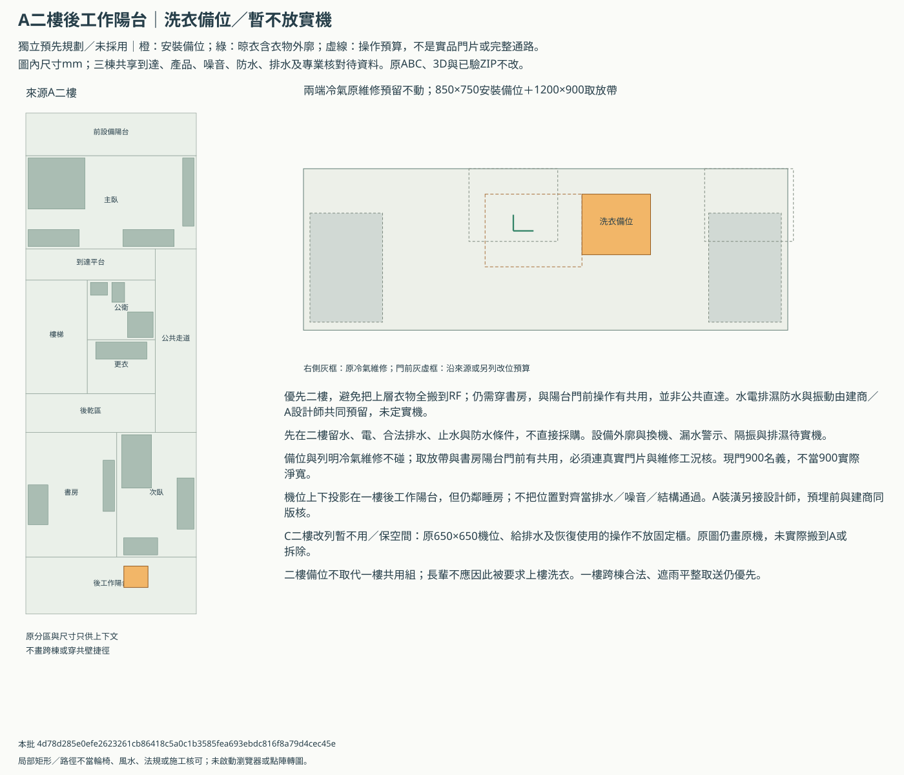
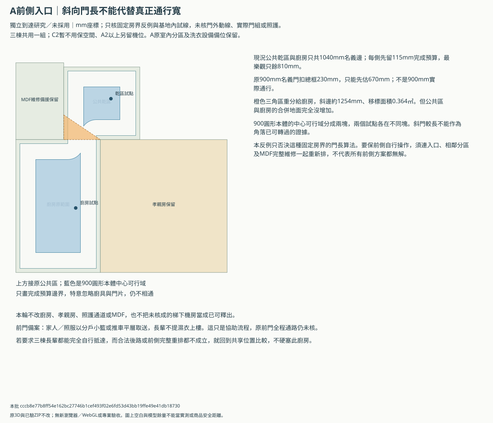
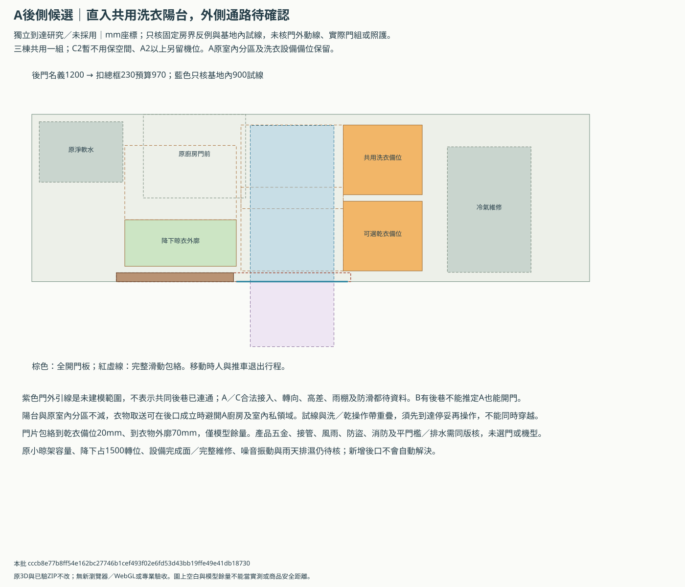
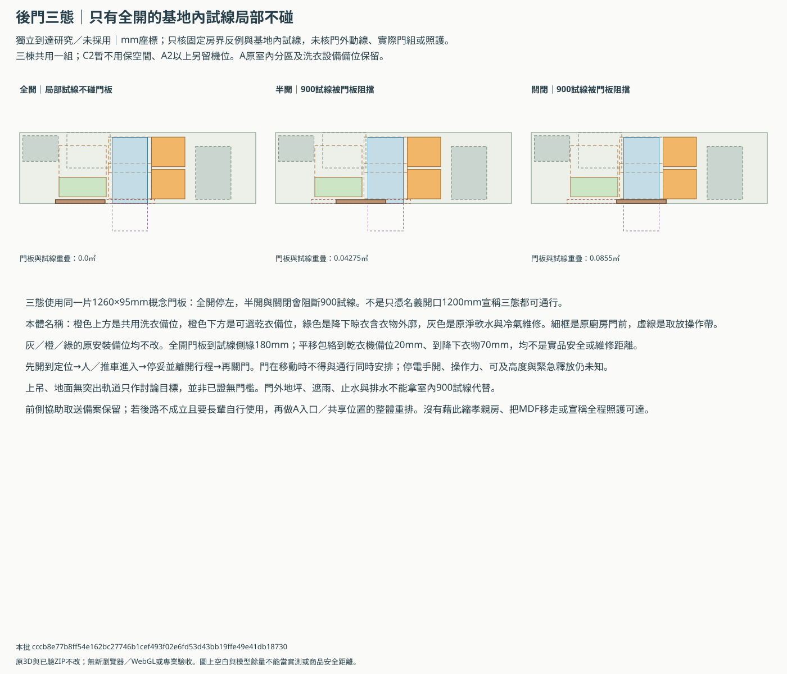
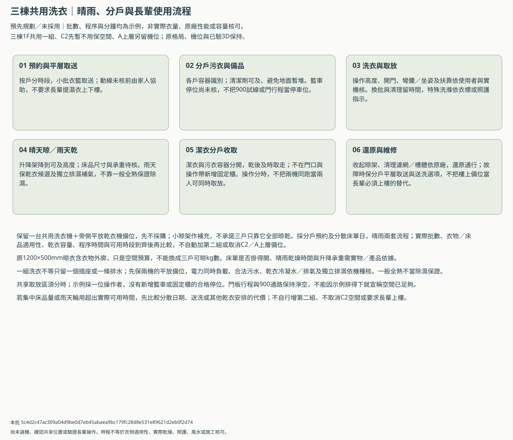
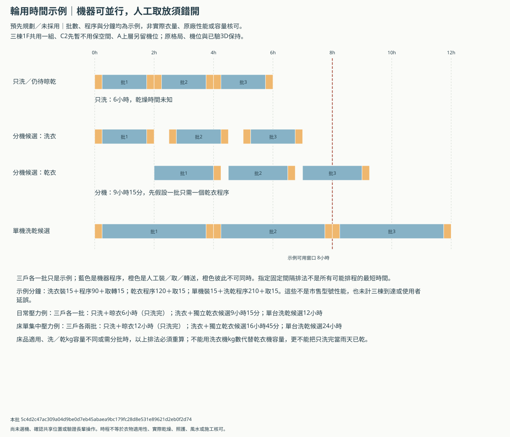

ABC生活情境走查
2026-11-13｜預先討論基準，未整套採用。B最新局部與C照護續版尚未全部併入整棟；合法可建量、產品及專業核對待資料。A裝潢另談，預埋前共同合圖。
最新洗衣方向：三棟1F共用一組、C2F先暫不用但保原機位與空間，A2F以上另預留機位。依洗曬平面、前側瓶頸／條件式後口及日常／雨天輪用討論；原圖內機位保持，未選A為共享主位置。
新方向：長輩一樓共用洗衣、晾衣與A上層機位
優先深化A一樓原後陽台轉向洗衣：既有機位改為共用、平放乾衣機只留位，晾衣降到可及高度。先不減廚房；需要不與晾衣共用的1500轉位時，再比較左側加深灣及其2.232㎡廚房代價。三棟總平面與實際門組未到，還不能把A位置定成全體長輩自行可達的共用區。
以下三張是獨立安裝備位平面，原3D仍未修改；A1優先不減廚房版，加深灣只保代價比較，A2只留位不買機。三棟位置／權利／遮雨通路未知，不畫共壁捷徑或稱全程照護可達；C2原機位與水電、洗曬空間保留，暫不用不等永久取消。



先核三棟合法平層取送、A一樓兩個900名義洞及1040共邊、雨天乾衣容量、噪音、防水、污水終端與完整產品／換機；A另聘設計師與建商在預埋前同版合圖。回饋沿原ABC-DAILY-CHAIN列，不代填接受縮廚房或選定機器。
續看：到達洗衣區的前側瓶頸與條件式後口
先保A1原陽台洗衣配置，優先向建商確認A後側是否能作合法平層直入；成立時才深化這個可關門候選。沒有共同後側到達，就保前側分戶小籃／推車取送並回到A整體入口重排，不強迫長輩走未核的窄廚房，也不自行縮孝親房或釋放MDF。
斜門三角移標不增加可走地面；1040共邊扣兩側115完成預算只810，900本體中心仍不相通。這只否決該固定房界算法，不表示所有前側重排無解；MDF完整維修與孝親房保持。
後口1200名義洞先估970淨寬，實際未知；只有全開900試線在基地內不碰列明本體，門外0.63㎡不在核算內。半開與關閉阻路，取送與洗／乾操作須分時。乾衣備位20mm及衣物70mm僅模型間距，不當產品安全距離。



A後口及共同後路的權利、轉向、高差、遮雨、防滑、門組與排水待實際資料；B有後巷不能推定A／C可接入。前門協助取送備案保留，未核全程照護可達。回饋仍用ABC-DAILY-CHAIN，不新增必填表，亦未取消原2.232㎡加深代價或小晾架容量等缺口。
接著比較日常、床單與雨天輪用
保留一台共用洗衣機＋旁側平放乾衣機備位，先不採購；小晾架作補充，不承諾三戶只靠它全部晾乾。採分戶預約及分散床單日，晴雨兩套流程；實際批數、衣物／床品適用性、乾衣容量、程序時間與可用時段到齊後再比較，不自動加第二組或取消C2／A上層備位。
以下批數與分鐘全部是假設壓力示例，不是屋主實際衣量、原廠性能或選機承諾。只洗的結果不含晾乾；洗乾結果先假設每批只需一個乾衣程序，床品適用與洗／乾kg容量待核。
| 假設工作量 | 候選方向 | 示例時間 | 完成口徑 |
|---|---|---|---|
| 日常壓力例：三戶各一批 | 只洗＋晾衣 | 6小時 | 只洗完，晾乾未知 |
| 日常壓力例：三戶各一批 | 洗衣＋獨立乾衣候選 | 9小時15分 | 指定洗乾示例，未實測 |
| 日常壓力例：三戶各一批 | 單台洗乾候選 | 12小時 | 指定洗乾示例，未實測 |
| 床單集中壓力例：三戶各兩批 | 只洗＋晾衣 | 12小時 | 只洗完，晾乾未知 |
| 床單集中壓力例：三戶各兩批 | 洗衣＋獨立乾衣候選 | 16小時45分 | 指定洗乾示例，未實測 |
| 床單集中壓力例：三戶各兩批 | 單台洗乾候選 | 24小時 | 指定洗乾示例，未實測 |


保一組洗衣與旁側平放乾衣機備位，先不買機；小晾架當補充，床品分日、分戶預約。兩機可同跑，但原取放區共用，人工操作錯開；示例窗口不是可連跑或夜間使用核可。籃車停位尚未核，不新增固定櫃占通路。
原LAU-03～08續核產品完整安裝／開門／拆換、電力同時負載、合法污水與冷凝水、獨立排濕、噪音振動及A建商／設計師分工。實際批數與容量未知，不把一般全熱當除濕；回饋仍沿ABC-DAILY-CHAIN，沒有新增必填流程。
預埋前用這張溝通單對接口：一樓共用候選、A上層備位、C2暫不用保恢復使用分開；沿原建商及A設計師表記錄。
先看各層收納是否符合生活習慣
先確認每層雜物收納是否符合生活習慣；位置與尺寸沿現有十個案例，不代表採用或可施工，也不把原衣櫃改算雜物容量。
先開A／C同版收納3D ZIP或B同版上層收納3D ZIP，各自解壓後開index.html。A／C選棟別、樓層，B選B-2F／B-3F／B-RF-D1／D2；依序比原配置、加櫃、特寫、整層與同層平面。展示通過不等於已接受位置或取物習慣。
尺寸沿原案例，平面X×Y有些因櫃體轉向而不同，不是櫃內有效容量；櫃前操作帶不是已核門片淨空。A裝潢仍另與設計師談；B後門預設／前門備案、兩個RF均保留；C2F洗衣機按最新方向暫不用，但原空間不放固定櫃。
優先看C三樓主臥內取物的隱私、A三樓展床後能否取物，以及各RF櫃只供耐候備品。建議是續研方向，尚未替屋主選擇或移櫃。
A棟
| 棟層／品名 | 原研究尺寸 | 取物會進哪裡 | 建議續研方向 | 看圖先確認的代價 |
|---|---|---|---|---|
| A-2F｜書房入口側獨立雜物櫃 | 平面X×Y 900×450mm；高1800mm；櫃前帶900×700mm | 進書房取物，公共走道不放櫃。 | 先保留，供文具、乾燥備品及小型物件；實際櫃內分層交A裝潢設計師深化。 | 看書房使用時取物是否互相干擾；櫃門與原家具一起核，不抵扣540cm衣櫃與240cm淺櫃。 |
| A-3F｜多用室前側家務收納櫃 | 平面X×Y 900×450mm；高1800mm；櫃前帶900×700mm | 進多用室取物，臨時住客使用時會共用房間。 | 先保留為換季與低頻備品；需要天天取用的共用品宜另有方便位置。 | 優先看沙發床展開、櫃門開啟及取物能否相容；目前未有實際展床商品驗證。 |
| A-RF｜後平台防雨工具櫃 | 平面X×Y 900×450mm；高900mm；櫃前帶900×700mm | 上後平台取物，與原家務、設備維修路線一起核。 | 保留低櫃，只收耐候工具與清潔備品，不當棉被、衣物的室內收納。 | 防雨不等於不結露；錨定、防鏽、排水與原設備換機空間待實際條件。 |


B棟
| 棟層／品名 | 原研究尺寸 | 取物會進哪裡 | 建議續研方向 | 看圖先確認的代價 |
|---|---|---|---|---|
| B-2F｜安靜起居側緣乾式雜物櫃 | 平面X×Y 450×1200mm；高1800mm；櫃前帶700×1200mm | 從公共安靜起居區取物，不借用獨立乾背保護室。 | 先保留輕量乾式備品櫃，維持既有祭祀與上下乾保護範圍。 | 不放濕設備、化學品或震動電器；看取物與休息是否互擾，P4排水及整棟工程仍另核。 |
| B-3F｜公共安靜區側緣乾式雜物櫃 | 平面X×Y 450×1200mm；高1800mm；櫃前帶700×1200mm | 從公共安靜區取物，不進客房、不占KTV機櫃。 | 先保留公共乾式備品，沿Q3同版房界與上層梯。 | 看櫃前取物與公共動線；不得把KTV聲學預算或乾背室改算儲藏面積。 |
| B-RF-D1｜折衣桌下防雨收納工作檯 | 平面X×Y 1200×450mm；高900mm；櫃前帶1200×700mm | 沿D1原折衣桌位置取物，操作與通行沿原方案分時。 | 保留桌下低櫃方向，不增加第二張桌；D1與D2各自保留比較。 | 看折衣與開櫃是否符合習慣；RF24㎡不足並未解決，不能因有桌下櫃就接受縮平台。 |
| B-RF-D2｜折衣桌下防雨收納工作檯 | 平面X×Y 1200×450mm；高900mm；櫃前帶1200×700mm | 沿D2自己的原桌位取物，不能借用D1桌位或設備條件。 | 保留獨立桌下櫃版本，待整套屋頂設備與通路條件再比D1／D2。 | 看前側角落取物與分時通行；桌高、防雨及錨定待商品，原RF24㎡目標保持。 |
完整同版平面與梯接口：解壓B同版3D ZIP後開plans.html，或使用檢視器內同層平面連結，按B-2F／B-3F／RF D1／D2及原配置／加櫃選圖。
C棟
| 棟層／品名 | 原研究尺寸 | 取物會進哪裡 | 建議續研方向 | 看圖先確認的代價 |
|---|---|---|---|---|
| C-2F｜乾式彈性區家務儲藏櫃 | 平面X×Y 1200×600mm；高1800mm；櫃前帶1200×800mm | 進乾式彈性區取物；二樓洗衣機依最新方向暫不用，原空間保留。 | 優先保留，集中日常備品、收納箱與吸塵器；依實物再分層。 | 看常用品是否順手、彈性區是否仍好用；不占洗曬、景觀、IDF或樓梯，停用機位不拿去放固定櫃。 |
| C-3F｜主臥右前側換季／備品櫃 | 平面X×Y 450×1000mm；高1800mm；櫃前帶700×1000mm | 必須進主臥取物；主臥關門或有人休息時，公共取物會涉及隱私。 | 位置先保留比較，優先確認使用者；三樓住戶專用較相容，全家共用則值得另研公共入口位置。 | 尚未收到這項用途答覆，不替屋主選；不為移櫃縮衣櫃、占公共走道或跑步機安全區。 |
| C-RF｜前平台防雨工具櫃 | 平面X×Y 900×450mm；高900mm；櫃前帶900×700mm | 上前平台取物，晾衣架與乾式弱電維修位置保留。 | 保留耐候備品低櫃；衣被與乾衣需求仍按室內條件另外規劃。 | 看櫃門與晾衣操作是否互擾；屋突樓梯、排水與設備維修空間不借作堆物。 |


回饋仍填原生活走查表的ABC-DAILY-CHAIN列，在「使用者回饋」寫案例ID與用途，例如C-3F供誰取物；不必另填十份表。圖號版次、同時使用衝突與待改事項沿原欄位，暫無答案留白。
原28題生活情境
先在圖上核正常一天、訪客、夜間與雨天，再按真實商品及適當專業協助確認。尚未做實物演練；不要求危險抬抱、倒地或載人試搬。
原22題均保留，B搬轎與背牆的舊路線文字按最新研究補上下文；原檔不修改。另加6題熱水、新風、香火、停電、上下樓與家務串聯，共28題。每題已有現有資料的紙上發現及來源；沒有重新計算幾何、實物演練或專業核可。
填使用回饋、衝突與待改事項。這份回饋不會自動修改圖面或核可。
| 情境ID | 怎麼使用 | 要核對什麼 | 紙上檢視發現 | 仍需依據 |
|---|---|---|---|---|
| A-ENTRY｜A | 進屋換鞋／騎樓雨天 | 鞋櫃本體、開門、濕鞋與孝親動線不得互相卡住 | 待完成面核對：一樓名義客餐19.40㎡，每面80mm內退假設僅約18.003㎡，貼近原18㎡目標；鞋櫃、進出門與雨具收納沒有充裕餘量可任意加櫃。 | 尺寸與同時使用演練 |
| A-ELDER｜A | 一樓孝親房照護 | 保留床、衣櫃、床側照護與不穿廚房的如廁路線 | 已識別門組缺口：底圖兩洞900mm，總扣230mm的假設只剩670mm；兩洞1200是尚未併入的小改，不代表現底圖已達900mm實際淨寬。 | 輪具與照護演練 |
| A-BATH-RESCUE｜A | 一樓衛浴倒地救援 | 門可由外側救援，扶手與淋浴不封住救援地面 | 待同版救援核對：公衛走公共乾區與照護通道；局部小改的盆與轉位最近20mm、房內方塊路線最近各20mm，分時操作及真門組救援仍是缺口。 | 完整門扇與救援演練 |
| A-MDF｜A | 梯下MDF維修／換機 | 不可把1200mm維修外廓當作900mm梯段已容納 | 已識別維修缺口：梯下候選完整維修外廓1200×2000mm，比名義900mm梯段寬300mm並跨梯間70mm；不能把機身放得下當成能維修或已釋放壁龕。 | 梯斜板剖面、消防及熱排 |
| B-RITUAL｜B | 祭拜／朝街正門 | 神桌與祭祀門同軸，門扇不撞家具或占用騎樓 | 保留分時與峰值核對：朝街正門／神桌軸線方向保留；前門搬轎仍需移凳／供桌並與祭祀分時，未證明祭祀人潮、進出與公衛能同時順暢。 | 祭拜人數、家規及開門演練 |
| B-BACKING｜B | 神桌背後／樓上用途 | 神明堂／乾背櫃及背牆依最新保護區核上下投影；庫房上方可臥室是屋主已答覆，不能誤套成神明堂上方也可睡人。 | 名義投影可續研，工程待核：最新NEW-01b另設乾保護室；濕區名義投影避保護範圍，不代表共牆、橫管、防水與梁位已完成。武轎庫可有臥室的答覆只限庫房，不放寬神明堂上方保護。 | 梁管線套繪與宗教確認 |
| B-CARRY-BODY｜B | 武轎收納本體搬入 | 分別按後門直接入庫與前門經側緣備案核本體搬入；原沿右側的單一路線敘述僅屬早期比較，不套用最新後左庫。 | 已識別前門餘量不足：後門直接入庫與前門側緣是兩個版本；前門1730門／1750接段，在總扣框230假設下門僅1500，對1500目標零餘量，不能作成品通過。 | 門框／搬運工具與實測 |
| B-CARRY-ASSEMBLED｜B | 帶抬桿／多人／雨天搬轎 | 裝桿外廓、重量與人員位置不能由收納量測代替 | 待完整實物資料：實物檔只有1200×1700×1800mm收納一般暫估，帶桿外廓、重量、人員及搬運演練仍空白；不能據收納本體批准搬運。 | 組裝尺寸與實物搬運演練 |
| B-SHOWER｜B | 一樓淋浴／衛浴救援 | 保留正常淋浴、馬桶、洗手台，轉位與救援不以面積推論 | 保留淋浴，操作待核：一樓正常淋浴未刪；入口、完成門框、轉位及救援尚未完整回套，前後門版也不能借用另一版的家務／通路結果。 | 水電、防水及照護演練 |
| B-MASTER｜B | 主臥20m²目標與原尺寸床櫃 | 面積、180×200cm床、衣櫃、梳妝與門位分別核對 | 已識別面積品質取捨：NEW-01b的20.2261㎡含L形入口與轉折，後段最大軸向內接矩形僅約14.4231㎡；兩衛扣井後4.4667／4.7124㎡也未達原5／6㎡。 | 完成面與同時操作 |
| B-LAUNDRY-KTV｜B | 洗衣／KTV保留需求 | RF候選不取代原1F工作陽台；跨棟KTV不視為已容納 | 已識別分時與功能未解：前門版洗衣機右移990mm後，洗衣操作仍與門開預算共用0.44525㎡；乾衣與KTV未因移位就完整容納，也不能以RF候選抹去原1F家務目標。 | 樓層偏好、合法性與容量 |
| C-VISITOR｜C | 訪客使用獨立公衛 | 訪客不得穿孝親房，公衛入口不被洗手台／鞋櫃堵住 | 保留獨立公衛方向：現討論維持訪客不穿孝親房的公衛；完整門框、鞋櫃與洗手台操作須隨整棟及局部續版同版核，不能只看入口符號。 | 門扇／完成面淨寬 |
| C-WINDOW｜C | 有窗公衛開窗／關窗／雨天 | 可開外窗＋獨立排氣補氣；風雨、結露與檢修都要核 | 待合法開口與排濕核對：局部圖有高窗候選，開窗權利、有效開啟面積與雨天關窗後獨立排濕未完成；外窗或全熱都不能單獨保證防黴。 | 有效開口、風量及雨水詳圖 |
| C-DINING｜C | 四人桌拉椅／輪椅轉向 | 桌椅外廓、150cm暫留與通行不是三份獨立淨空 | 待拉椅與通行同時核對：客餐共用方向及1.08㎡取捨已在原研究保留，但椅子拉出、輪具轉向與通行帶可能共用，名義迴轉區不是額外可加總面積。 | 多人同時使用演練 |
| C-KITCHEN｜C | 備餐／開冰箱／換冰箱 | 原尺寸廚具與冰箱不縮；工作帶交集必須揭露 | 待實品開門與換機核對：前置冰箱／450mm隔間屬既有局部研究；冰箱開門、備餐操作與換機搬入仍須按同版完整外廓核，不能只看機身矩形。 | 多人使用與換機搬運 |
| C-ELDER-WET｜C | 孝親床／上層濕區 | 保側牆床、後窗與床體上方無濕區，不拿230mm間隔當防水保證 | 保床體避濕，管道待核：原方向是避開床體上方浴廁；臥室其他部分並非全無上層濕區。不能把已同意的床體層級擴大或放寬，梁管及防水仍另核。 | 管道／梁與防水套繪 |
| C-BATH-RESCUE｜C | 孝親套衛夜間如廁／救援 | 120cm淋浴不縮，迴轉、側移與倒地救援另核 | 已識別偏側、濕地及緊餘量：側盆仍偏側250mm，轉向到扶手只18.5mm；轉位借淋浴濕地、洗手與側移分時，整棟入口與兩片門尚未全併。局部幾何不能當照護／救援通過。 | 照護輪具與完整門片 |
| ABC-STAIRS｜ABC | 較高一樓上下樓 | 梯段、平台、到達層、淨高、扶手與全部標高一起核 | 待完成面及全棟剖面：A原梯段900mm為名義，C已整合4m／24級／270mm與共享平台；實際扶手、梁板、門扇及全段淨高未核，兩棟梯細節不能互套。 | 結構、消防與現場高度 |
| ABC-MOVE｜ABC | 大型家具搬入／搬家 | 床墊、沙發、冰箱與洗衣機須能經門與轉角，不只放得下 | 待大型實物與轉角核對：正式實物清單目前只登錄一件武轎，床墊、沙發、冰箱及洗衣機尚未建立完整搬運外廓與演練，圖內放得下不表示能搬進去。 | 外廓與樓梯轉角演練 |
| ABC-HVAC｜ABC | 冷氣排凝水／室外機更換 | 原廠管長、高差、重力排水、通風和換機不可缺一 | 已識別候選管長與型號缺口：C的P2概念線20.895m，不能硬套型錄索引20m；候選室內機高295mm較模型280多15mm。整套排凝、維修與精確配對產品仍待回覆。 | 機型手冊與可檢修路由 |
| ABC-PARKING｜ABC | 停車／接送／電動車 | 騎樓不算車位；原汽機車與充電需求保留，未容納要明列 | 已識別原需求尚未容納：目前騎樓按通行預留、不算車位；原A一車、B一車及C兩車加機車需求未因此滿足，須依正式基地與實車重新核，不能挪用騎樓補足。 | 地籍權利與實車掃掠 |
| ABC-MOISTURE｜ABC | 長雨／窗框與牆內漏水 | 避免封死檢修；濕度控制不代替防水、修漏和清潔 | 待外殼及濕度整體設計：全熱需求已確認，但未有窗框／管根防水、結露及主動除濕的完整實際設計；新風不取代修漏、防水與必要除濕。 | 試水、結露觀察與維護 |
| ABC-HOT-WATER｜ABC | 遠端浴室及兩處同時用熱水 | 核等待、流量、溫度穩定、防燙、循環能耗及泵浦噪音，不先選大主機。 | 待系統計算：屋頂熱源／泵浦仍候選，未有各浴室同時用水及遠端等待計算；不能由熱水器品牌或水塔方塊推定供水夠用。 | 同版圖面／完整產品／使用與專業核對，尚未演練。 |
| ABC-CLOSED-AIR｜ABC | 睡房門關閉、浴廁或油煙同時排風 | 各常用房有有效室外風與關門轉送；補氣、聲學及壓差另核，ERV不代替除濕。 | 待關門工況核對：常睡房要有效室外風與轉送；C可關前室保留，不能靠開梯門作唯一回風。風機工作點、夜間噪音及局部排風補氣仍未知。 | 同版圖面／完整產品／使用與專業核對，尚未演練。 |
| B-INCENSE-AIR｜B | 燒香、來客及樓梯分隔門關閉 | 香火源頭獨排／補氣與一般ERV分離，補氣不直吹神桌；峰值人數未知不當0。 | 待香火峰值與補排氣：B一樓燒香須獨立源頭排氣／補氣；樓上兩人新風量不能代替香火需求，乾保護室不改機房，樓梯門關閉工況仍需核。 | 同版圖面／完整產品／使用與專業核對，尚未演練。 |
| ABC-OUTAGE｜ABC | 夜間停電、停水、斷網與漏水 | 門禁手動開啟、必要照明、設備安全停復、手動關水及在地警示可用；不預設全屋UPS。 | 待分級備援與在地控制：目前未有本案門禁、供水、警報及必要照明的完整停電／離線測試；先分必要功能與可手動降級項，不假設所有設備都接UPS。 | 同版圖面／完整產品／使用與專業核對，尚未演練。 |
| AC-VERTICAL｜AC | 長期上下樓與升降設備故障 | 一樓完整生活、井道預留與不預留的代價先比較，升降設備不代替逃生。 | 待前期策略比較：A／C以一樓生活先維持照護方向；現圖未核可未來升降井道／坑底／頂部，不能先宣稱交屋後隨時能加電梯。預留與不預留的面積／結構代價須提早比較。 | 同版圖面／完整產品／使用與專業核對，尚未演練。 |
| ABC-DAILY-CHAIN｜ABC | 採買卸貨、垃圾與雨天濕衣 | 完整家務鏈不穿私人睡房或阻斷祭祀／照護；最新方向為三棟1F共用一組、C2F暫不用但保空間，A2F以上另預留機位，長輩不提濕衣上樓。 | 一樓共用方向／到達、雨天容量與產品待核：原跨層搬運需求改依最新方向：三棟1F共用一組、C2F暫不用保空間，A上層另留備位。A1原陽台轉向不減廚房；900名義洞扣框假設只670，1040共邊扣完成預算810，斜門移標不解900中心連通。後口全開只核基地內試線，半開／關閉阻路，乾衣備位20mm僅模型餘量；後路權利與產品未核，前側協助取送保留。小晾架不能推成kg容量；示例3批只洗6小時但乾燥未知，分機洗乾9小時15分含人工互斥，並非實測。床品分日與雨天乾衣備位先保留，真實批數與容量仍未知，加深灣另花廚房2.232㎡未採用。 | 同版圖面／完整產品／使用與專業核對，尚未演練。 |
本包依據 0683ac112efadbb43f909c246e5dcaf21b6f35722da1f6f1fa7adcf9db70c0b9。靜態閱讀副本，沒有新瀏覽器／3D或專業驗收；來源與使用邊界。